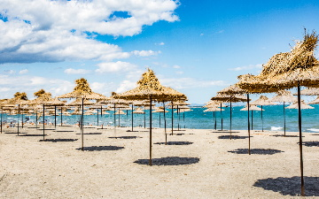

Един ден в София - маршрутът, по който трябва да мине всеки
Това е маршрут, по който можете да разведете гостите си, за да разгледат най-важното от столицата на България. Но е чудесен и за вас, дори да сте родени в този град и да сте минавали по улиците му милион пъти. Предлагам ви роля. Ролята на туристи. Друго си е, като тръгнеш да опознаваш, не просто да минаваш. Тогава всичко е различно, интригуващо, вълнуващо и релаксиращо. И така, обуйте се удобно, ако е лято – вземете дреха за всеки случай, и си определете бюджет. Фотоапарат или камера са препоръчителни за всеки истински турист, но нали и телефонът ви е с вас?
Хотел Гергана, Албена
Хотел Гергана се намира на самата плажна ивица в непосредствено до резерват "Балтата", прочут с естествените си лонгозни гори и редки видове птици. Разположен е на 1 км от централната част на Албена в тиха пешеходна зона. Уникалното съчетание между красива растителност и морски изглед превръщат хотел Гергана в неповторимо място за пълноценна почивка.
Хотелът е напълно реновиран през 2008 г.

Плаж Арапя се намира в изключително красив залив между Лозенец на юг и Царево на север
Заливът е заобиколен от широколистни и борови гори. Плажната ивица е с дължина от около 700 м и ширина от около 80 м а водите са чисти и плитки. Специфичната му форма, която е по-тясна от към морето, го предпазва от морските течения и вълни. Тези характеристики го правят идеален за семейства с деца.
На плаж в Царево
Царево е малко, но особено приятно място за релакс и почивка през летния сезон. Там ще откриете всичко, от което се нуждаете, за да имате пълноценен и незабравим престой.На близо 3 км. от Царево е плаж Нестинарка, до където се организира редовен превоз с влакче. Там също водата е приятна за къпане, а за настроението ви се грижат атракции като водни колела, разходка с лодка, каране на джет и т.н. Не далеч се простират и плажовете на старите къмпинги Корал, Юг и Оазис

Бъндеришки езера – супер място за приятна разходка в Централен Пирин
Бъндеришки езера се нарича голяма езерна група в Централен Северен Пирин .
Общата им площ е доста голяма – около 12,7 ха и покрай тях минават някои от най-популярните маршрути в Национален парк „Пирин”.
Намира се в Бъндеришкия циркус и даваща началото на река Бъндерица. Те са с ледников произход и се разполагат върху гранитна основа. В групата на Бъндеришките езера влизат общо 16 езера , като от тях само пет имат свои имена.
Водите им образуват река Бъндерица. Общата им площ е цели 126,7 дка. Температурата на езерните им води през 10 – 12 °C през юли. Тя е със слаба минерализация с натриеви и хлорни йони.
Окото е най-ниското, а Жабешкото – най-високото. Денивелацията им е над 250м. между Жабешкото и Окото. Близо до езерата минават пътеките от хижа Вихрен към хижа Демяница, към заслон Тевно езеро и към хижа Синаница.
Сутрешна разходка и кафе в старият град на Созопол
Созопол не се нуждае от изброяване на забележителности, защото сам по себе си е забележителен. Дори само разходка в Стария град е достатъчна да помести черноморското градче в сърцето ти. Всяка стъпка по тесните улички те пренася все по-назад във времето от средновековен Созополис към древна Аполония. Историята се слива с романтичната архитектура, застлала скалите на малкия полуостров Скамний. Духът на морето поклаща смокиновите дръвчета в ритъма на лятото, докато чайките шумно пригласят на рибарските песни. Накрая, вечерта те посреща с аромат на риба в някой уютен ресторант върху отвесния бряг, под които се разбиват вълните. А нощната разходка след това е обаятелна!

История и легенди за нос Калиакра
Легендата за произхода на това име гласи:
По време на османското нашествие, нападателите успели да завладеят крайморските селища. Те ограбили и плячкосали всичко, което срещали по пътя си. Взели в плен 40 девойки. Избрали най-красивите, които срещнали. Отвели пленничките на връх нос Калиакра и ги затворили в последната пещера, като оставили стража, която да ги пази откъм входа. Очаквали настъпването на вечерта, за да напалят буйни огньове и да предадат хубавиците на най-изявените войни, като награда за храбростта им.
Девойките, събрани от различни села, не се познавали, но общата зла съдба ги сближила като сестри. Нито една от тях не искала да бъде обезчестена от нападателите. Цял ден търсили начин да се спасят от участта, която ги очаквала. Най-смелата от тях им разкрила пътя, чрез който да спасят честта си, като посочила прозореца и казала: Натам е спасението, натам, морето ще ни прибере! Някои от девойките се изплашили и започнали да вият. Но повечето от тях се окопитили и утешавали другарките си: Няма живот за нас, по-добре чисти да умрем в морските води, отколкото да попаднем в ръцете на войниците.
„Свети Йоан Летни“
„Свети Йоан Летни“ е недействаща средновековна българска църква, намираща се на брега на язовир Пчелина, до село Поцърненци, област Перник. Параклисът е на изумително красиво място – на върха на висока скала, непосредствено до стръмния скат към язовир „Пчелина”. В нея има частично запазени стенописи от 16 век.
На входа на нощна София
София, която гледа кино на открито, разцъфва в лилии, люляци, кестени и кафенета, вози се в трамваи, спуска се със ски, пързаля се с найлон по снега в Западен парк и ходи пеша от Лагера до Халите, от Стрелбище до Заимов, от Полигона до Орлов мост.
Райското пръскало - Адреналин за всички!
Водопад Райско пръскало се намира в централната част на Стара Планина, на южната страна под най-високият връх на планината – Връх Ботев (2376 метра). Водопадът е на територията на резерват Джендема, който е част от национален парк Централен Балкан.
Райското пръскало се образува от реката Пръскалска, която идва от вечния снежник, намиращ се малко под връх Ботев. Снежника е наречен така, тъй като снега му стои дори през летния сезон.
Морски фар - Ахтопол
Фарът заработва през юли 1932г. Той е един от най-красивите морски фарове по крайбрежието ни.
Издига се пред входа на пристанището на Ахтопол. Построен е върху риф, което го прави особено живописен, но и особено опасен за поддръжка заради трудния достъп.
Върху скалата е изградена квадратна основа с височина 3.5м, върху нея е издигната кръгла каменна кула, висока 4.8м и двуметрова железобетонна конструкция с по-малък диаметър, на която е поставена желязна призма с височина 3м.
Залив и резерват Болата
Болата е малък, красив залив и резерват на българското Черноморие. Намира се от северната страна на нос Калиакра, на около 6 км югоизточно от с.Българево, около 13 км от гр. Каварна в същата посока, и приблизително на 74 км североизточно от гр. Варна.
Това е езеро тип лиман и тясна клисура, която се врязва в брега до бивша военна станция. От двете й страни има скални масиви с издълбани в тях пещери. През Болата протича къса рекичка, която се подхранва от множество извори. На мястото, където тя се влива в морето, се образува устие на лагуна.


{kind=link}
{kind=link}
{kind=link}
{kind=link}
{kind=link}
{kind=link}
{kind=link}
{kind=link}
{kind=link}
{kind=link}